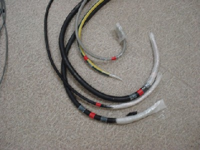
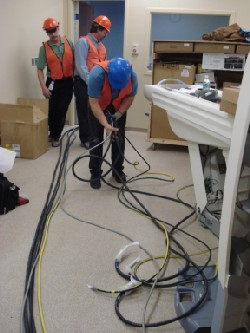

Operating Documentation
Direction 5193574-800, Rev# 22
LightSpeed 7.X Service Methods
Module Version 1.0, Version Date 4/22/10
Operating Documentation |
| Labor: | 1 person; 0.5 man-hour |
| Tools: |
1. Locate the cables in the Lean Cart or other shipping boxes. |  |
2. Segregate the cables into common runs. Use the color-coded ends to help identify the cable runs. | |
3. Unroll and lay out the cables on the floor to prepare for pulling with fish tape or routing in cable-ways as required. |  |
4. Console to Gantry: Run #56, #101, #102, #103, #112 (Cardiac), Injector, and any other options. | |
5. PDU to Console: Run #53. | |
6. PDU to Gantry: Run #50, #51, #52, #55, #100. | |
7. PDU to UPS: Run #60, #61. | |
8. UPS to A1 Main Disconnect: Run #110. |